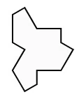
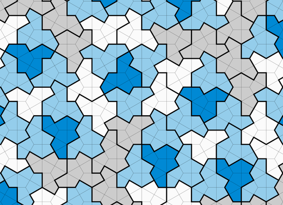
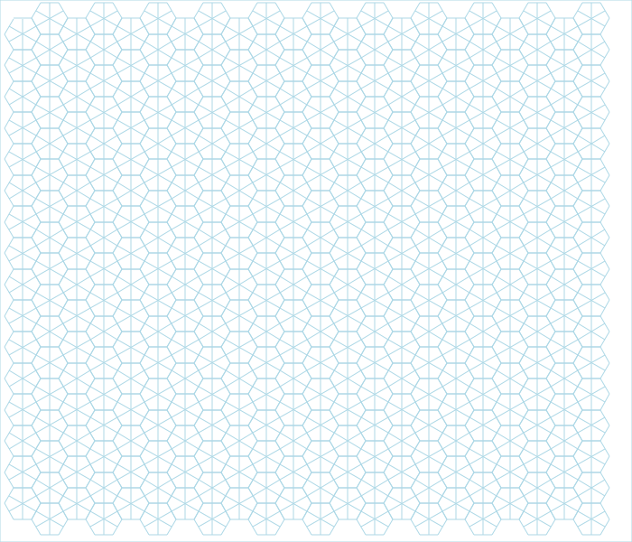
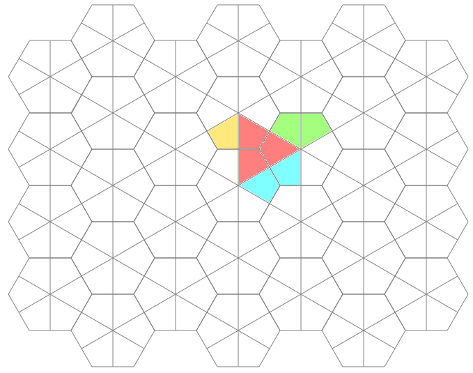

Of Hexagons, Kites and Tiles
 I recently read about the 13-sided "Einstein shape" (or hat/t-shirt tile) on a hexagonal grid of kites. Being a curious cat and programmer, I had to find out more! (tl;dr: hexagon-grid and animation at the bottom)

I started by actually printing out a couple images from the article and then cutting out the shapes... My mom, who is a seamstress, would be proud! And at first, I didn't realize the the entire hexagonal graph is made of whirling kites. I only focused on the hexes, until she mentioned that she could quilt it with the "English Paper Piecing" technique. Huh? :-)
Once I realized that the kites in the graph were the "atoms" of these tiles, I began to scour the Internet for graph paper to color-fill with an image editor. Alas, this led to nothing! I am still shocked. There are plenty of hex graphs, divided at the vertices. But I needed hexes divided in the middle of each side! Also, there are plenty of English Paper Piecing kite templates out there. But they are always arranged in non-contiguous rows, or as individual pieces to be cut-out.
So after much fretting, I decided it was time to make my own graph paper, so that I could properly inspect these figures and especially that 13-sided aperiodic tiling (and geometric tessellations in general).
At first, I tried to find a mathematical way. Ugh - complicated and academic. Then I thought I could just use line drawing, but that tuned out to be no fun calculating and keeping track of where all the start and end points were located. Finally I stumbled upon a post about drawing hexagons with turtle graphics. Ha! And that was my answer! All I had to do was figure out how a turtle would efficiently traverse the entire graph - kites and all... Hmmmm.
Enter Perl! I decided to marry the Data::Turtle module with the SVG module - simple!
We start with the standard perl5 preamble:
#!/usr/bin/env perl
use strict;
use warnings;
Next we import the (object oriented) functionality from the Data::Turtle and SVG modules. Additionally, we will capture user input in the form of command-line options with the excellent Getopt::Long module:
use Data::Turtle ();
use Getopt::Long qw(GetOptions);
use SVG qw(title);
We declare and assign defaults for the possible command-line parameters:
my %opts = (
rows => 4,
cols => 7,
side => 60,
width => 700,
height => 600,
stroke => 'gray',
fill => 'white',
);
Then we capture any user command-line input:
GetOptions( \%opts,
'rows=i',
'cols=i',
'side=i',
'width=i',
'height=i',
'stroke=s',
'fill=s',
) or die 'Problem getting command options';
This program is about geometry, so we compute the kite side dimensions:
my $short = $opts{side} / 2;
my $long = $opts{side} * sqrt(3);
Next up, we instantiate an SVG object, give our diagram a title, declare a "style" for the stroke and fill colors, and make a white background:
my $svg = SVG->new(
width => $opts{width},
height => $opts{height},
);
$svg->title()->cdata('Hexagonal Kite Grid');
my $style = $svg->group(
id => 'style-group',
style => {
stroke => $opts{stroke},
fill => $opts{fill},
},
);
$style->rectangle(
id => 'rectangle-frame',
x => 0,
y => 0,
width => $opts{width},
height => $opts{height},
);
Next, we need a turtle to do the actual traversing. We start it heading right (0) inside the top left corner:
my $turtle = Data::Turtle->new(
x => $short + $short / 2,
y => $opts{side},
width => $opts{width},
height => $opts{height},
heading => 0,
);
Now each line we draw with SVG needs to have a unique ID, so we use a counter initialized to the current time (number of epoch seconds):
my $count = time();
Now for the meat of the program. We iterate over the number of columns and rows, drawing a single hexagon at a time (with dividing lines making 6 kites):
for my $col (1 .. $opts{cols}) {
my $extra = $col % 2 ? 0 : 1;
for my $row (1 .. $opts{rows} + $extra) {
$count = hex_kite_grid($style, $turtle, $count);
Each time we have drawn a single hex-with-kites figure, we move to the next row's (lower) starting point in the column:
$turtle->right(90);
$turtle->forward($long);
$turtle->left(90);
}
Each time we have drawn a column, move to the next starting point, which is up to the first row, and one column over:
$turtle->left(90);
$turtle->forward($long * $opts{rows} + ($long / 2));
$turtle->right(90);
$turtle->forward($opts{side} + $short);
}
Finally we print the SVG as an ordinary XML string:
print $svg->xmlify;
This allows you to run the program and pipe the output to a file called hex.svg for instance.
Ok. Now we come to the only subroutine in the code. It traverses clockwise from top-left:
sub hex_kite_grid {
my ($style, $turtle, $count) = @_;
First, we will draw a 6 sided hexagon:
for my $i (1 .. 6) {
A line is defined when we move the turtle. This is added to our growing SVG:
my @line = $turtle->forward($opts{side});
$style->line(
id => "line-$count",
x1 => $line[0],
y1 => $line[1],
x2 => $line[2],
y2 => $line[3],
);
Crucially the unique line-ID count is incremented:
$count++;
And then we adjust our heading, so that we are ready to trace another hexagonal side:
$turtle->right(60);
}
Next we need to draw 3 spokes that divide the hexagon into 6 kites:
for my $spoke (1 .. 3) {
First, we move to the middle of a hexagon side and turn to the center:
$turtle->forward($short);
$turtle->right(90);
Now draw a line to the other side:
my @line = $turtle->forward($long);
$style->line(
id => "line-$count",
x1 => $line[0],
y1 => $line[1],
x2 => $line[2],
y2 => $line[3],
);
Increment the ID counter again:
$count++;
And adjust our position and heading so that we are ready to trace another spoke:
$turtle->right(90);
$turtle->forward($short);
$turtle->right(60);
}
Return the current counter to the calling loop, so that we can keep track of it for the next iteration:
return $count;
}

Once I finally had my hexagonal graph paper, I could use it to figure out things like, "How many possible rotational and flip symmetries are there"? And here is an animated graph of the 12 possible, colored, so that things are more obvious:
